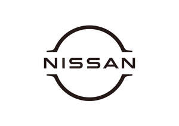

Trade Mark Journal No.2026/005 30 January 2026
UK00004293590 12 November 2025 (1,2,3,4,5,7,11,27,38,40,41,42,45)

- Class 1
- Glass-staining chemicals; Glass-frosting chemicals; Preparations for preventing the tarnishing of glass; Antistatic preparations, other than for household purposes; Chemical preparations for automotive repair and maintenance; Chemical preparations for water repellent; Chemical compositions for repairing windshield glass; Adhesives for industrial purposes; Chemical sealants for vehicle parts and surfaces; Epoxy resins, unprocessed; Separating and unsticking [ungluing] preparations; Chemical additives for oils; Chemical additives for fuel injection system cleaners; Chemical additives for use in radiators to prevent rust; Chemical additives to air conditioner refrigerant; Chemical additives to motor fuel; Acidulated water for recharging batteries; Brake fluid; Power steering fluid; Transmission fluid; Coolants for vehicle engines; Paste fillers for automobile body repair; Transmission oil.
- Class 2
- Undercoating for vehicle chassis; Primers; Paints; Coatings [paints]; Anti-rust greases; Anti-rust oils; Anti-rust preparations; Protective preparations for metals; Anti-tarnishing preparations for metals.
- Class 3
- Windshield cleaning liquids; Polishing wax; Rust removing preparations; Paint stripping preparations; Cleaning preparations; Shining preparations [polish]; Degreasers for automotive use; Degreasers other than for use in manufacturing processes; Perfumes; Eau de Cologne.
- Class 4
- Industrial oil; Industrial grease; Lubricants; Motor Oil; Lubricating grease; Castor oil for industrial purposes; Fuel.
- Class 5
- First-aid boxes, filled; Deodorants, other than for human beings or for animals; Air purifying preparations; Air deodorising preparations; Medicine cases, portable, filled.
- Class 7
- Mufflers for motors and engines; Cylinders for motors and engines; Pistons for engines; Belts for motors and engines; Oil pans for engines; Cylinder heads for engines; Cylinder head covers for engines; Engine covers; Crank shafts; Pulleys [parts of machines]; Exhaust manifold for engines; Intake manifold for engines; Filters being parts of machines or engines; Filters for cleaning cooling air, for engines; Air cleaners for engines; Fans for motors and engines; Oil coolers; Sparking plugs for internal combustion engines; Gaskets for engines; Radiators [cooling] for motors and engines; Igniting devices for internal combustion engines; Superchargers; Turbocompressors; Electricity generators; Compressors [machines]; Hydraulic controls for machines, motors and engines; Pumps [parts of machines, engines or motors]; Alternators; Valves [parts of machines]; Piston rings; Starters for motors and engines; Camshafts for vehicle engines; Catalytic converters; Injectors for engines.
- Class 11
- Air conditioners for vehicles; Air filtering installations; Anti-dazzle devices for vehicles [lamp fittings]; Defrosters for vehicles; Fans [parts of air-conditioning installations]; Vehicle headlights; Heaters for vehicles; Ionization apparatus for the treatment of air or water; light bulbs for directional signals for vehicles; Lighting apparatus for vehicles; Radiator caps; Radiators [heating]; Vehicle reflectors; Refrigerating apparatus and machines; Ventilation [air-conditioning] installations for vehicles; Electric lamps; Lamp casings; Light diffusers; Flashlights [torches].
- Class 27
- Carpets; Floor coverings; Mats; Rugs; Carpets for automobiles.
- Class 38
- Telecommunications services; Telecommunication services by vehicle apparatus; Communications by computer terminals; Communications by telephone; Providing user access to global computer networks; Computer aided transmission of messages, sound and images; Transmission of digital data, obtained from vehicle apparatus; Providing access to databases; Transmission of digital files.
- Class 40
- Recycling of waste and trash; Recycling of land vehicles, structural parts and fittings therefor; Sorting of waste and recyclable material [transformation]; Recovery of used parts of land vehicles; Upcycling [waste recycling]; Providing information relating to material treatment; Custom assembling of materials for others; Waste treatment [transformation]; Tinting of car windows; Rental of batteries.
- Class 41
- Education; providing of training; entertainment; sporting and cultural activities; Online publication of electronic books and journals; Publication of texts, other than publicity texts; Organization of competitions [education or entertainment]; Organization of sports competitions; Management or arrangement of motor sports competition; Booking of tickets for motor sports and / or motor racing events; Vehicle-driving instruction; Providing information in the field of education; Educational services; Providing sports facilities; Rental of sports equipment, except vehicles; Entertainment services; Providing online electronic publications, not downloadable; Organization of electronic sports competitions; Providing of training in the field of automotive sales and services.
- Class 42
- Meteorological information; Hosting computer websites; Creating and maintaining websites for others; Monitoring of computer system operation by remote access; Monitoring of data, obtained from vehicle apparatus; Conversion of data or documents from physical to electronic media; Analysis and research services of data, obtained from vehicle apparatus; Technological consultancy; Consultancy in the field of energy-saving; Vehicle roadworthiness testing; Inspection services for new and used vehicles before sale; Roadside emergency and security services, namely, detection and notification of locking and unlocking of vehicle doors to vehicle owners.
- Class 45
- Personal and social services for others comprising providing customer-specific service with vehicle equipments to meet individual needs, all rendered over the phone, via e-mail or by text message; Remote set and start of battery charge and air conditioner in an electric vehicles; On-line social networking services; Security services relating to land vehicles; Concierge services for others comprising providing customer-specific service with vehicle equipments to meet individual needs, all rendered over the phone, via e-mail or by text message; Roadside emergency and security services, namely, remote vehicle door lock and unlock, stolen vehicle tracking, detection and notification of same to vehicle owners.
Nissan Jidosha Kabushiki Kaisha (also trading as Nissan Motor Co., Ltd.)
Representative: Hogan Lovells International LLP